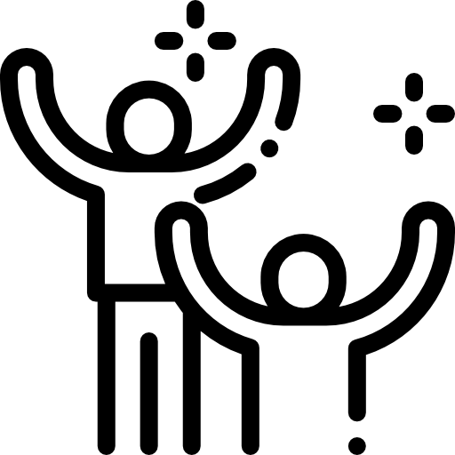
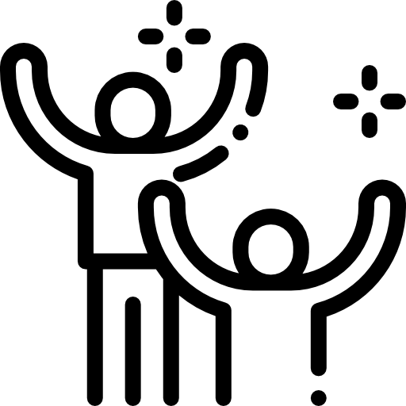

Edey José Hernández Montelongo
Estudiante de programación
Estudiante de programación
Desde pequeño, he sentido una fascinación genuina por la tecnología y la creatividad que permite. Ya fuera en tardes de videojuegos, diseñando juegos de mesa personalizados o creando mis propias ediciones de video, siempre encontraba en la tecnología un medio para explorar y construir mundos. Hoy, he decidido convertir esa pasión en mi camino profesional y adentrarme en el desarrollo web, con el firme propósito de crear experiencias digitales únicas y funcionales.
Este es solo el comienzo de un sueño más amplio: en el futuro, además de desarrollar sitios web que realmente conecten con las personas, me veo creando videojuegos que fusionen arte y tecnología, capaces de contar historias y despertar emociones. Me motiva el reto y la oportunidad de aprender cada día en este campo, y mi objetivo es claro: construir una carrera que no solo refleje mis habilidades, sino también mi pasión por esta industria.
 
